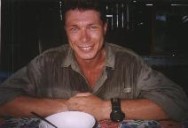
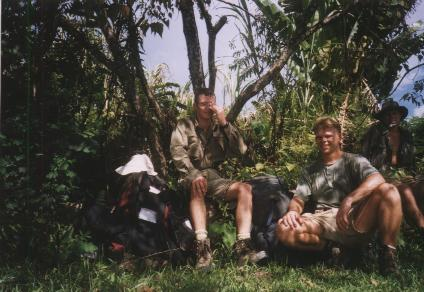
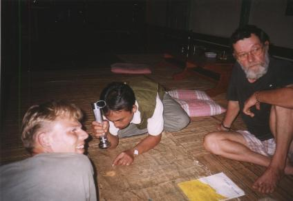
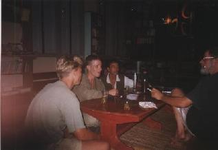

We stonden 's morgens om 5:30 uur op en ons ontbijt bestond uit APAM PINANG SARI KAYA. Dit is een soort dubbelgevouwen dikke pannenkoek met een soort pindakaas of marmelade ertussen. Om circa 8:00 namen we de bus vanuit Putussibau naar Benuamartinus (zie kaart) voor Rp 25.000 per persoon. Het was een klein busje, vergelijkbaar met een 9-persoonsbusje die in Nederland bij een autosloperij zou staan. Op de voorste bank zaten drie keer zoveel mensen dan op de achterste bank. Steven en Richard zaten achterin. De rit was zoals gewoonlijk weer behoorlijk wild, want vrijwel niets was geasfalteerd. Toen we uit moesten stappen en dachten dat we er waren, moesten we nog zo'n 7 km lopen, omdat de weg te smal en onbegaanbaar was. Ach, een stevige wandeling met volle bepakking op het heetste punt van de dag kan geen kwaad... We werden vreemd aangegaapt toen we de brommertjes afwezen (Rp 10.000 per persoon) en zeiden dat we liever wilden lopen.
|  |
Richard zweet juist wel wanneer hij indo-mie eet met een extra scheut chili-saus (vlak voor de wandeling naar Benuamartinus). |
Na ruim een uur lopen en zweten kwamen we langs een mooi huis met een berg zand en kiezels in de tuin. We hadden in Putussibau gehoord dat hier een pastoor zou wonen en Steven zei: "Hier woont die pastoor." "Zou kunnen", zei ik. We liepen de rest van het dorp door en kwamen bij de rivier. De huisjes waren vreemd genoeg niet pal aan de rivier gebouwd. Later bleek dat deze zijrivier van de Kapuas zich in de loop der jaren had verplaatst. Dit is mogelijk, omdat het geen rotsbodem is, maar een kiezel- en zandbodem. Ik heb me gewassen en wat af laten koelen in de rivier.
|  |
Bij de rivier waar ik me gewassen heb.
|
Het huis van de pastoor hadden we dus al gezien, de lariekoek van Steven bleek geen lariekoek te zijn. Hier woont pastoor Peter Hoogland. Hij verkondigt het katholieke geloof en werkt hier al ruim 30 jaar. Gemiddeld eens in de 10 jaar krijgt hij onverwacht bezoek van mensen uit zijn geboorteland: Nederland (orang Belanda). Ondanks dat hij in Benuamartinus op handen en voeten wordt gedragen door de bevolking en betrokken is bij allerhande projecten, komt hij toch een beetje over als een ware kluizenaar. Dit gevoel hadden we vooral in het begin. Hij deed de deur open en zag ons daar staan. Het was een heel normale nuchtere en koele begroeting. Uiteraard werd er meteen al veel gepraat, maar het duurde zeker een uur voordat ik het gevoel kreeg dat we echt welkom waren. Vanaf dat moment hebben we bijna alleen nog maar genoten van zijn cynische humor en zijn verhalen. We zaten buiten, pal voor de deur op een soort veranda. Steven begon zijn bergschoenen in te vetten. Hij goot het door de hitte vloeibaar geworden vet vervolgens over de houten bank van de pastoor. Peter begon steeds meer te vertellen. Slechts enkele dingen kan ik me nog herinneren:
Wij hadden inmiddels ook onze verhalen verteld, zodat Peter wist wat we nu van plan
waren (de jungle in). Klik hier voor de route die we wilden nemen. Voordat we gingen eten (we kregen de restjes, maar het was goed
binnen te houden) ging Peter naar Ebok. Ebok is volgens Peter de beste jager uit dit
dorp en kent de omgeving als geen ander.
|  |
Ebok laat ons op een kaart van 50 jaar oud zien tot waar in de jungle hij ons kan brengen |
|  |
's Avonds in de woonkamer bij pastoor Peter Hoogland |
's Avonds bleef Ebok er ook en de sfeer was goed. Wij hadden veel zin in een extreem avontuur. We kregen steeds zelf gedistilleerde Arak met dropextract en zelfgeroosterde pinda's. Peter bleek heerlijk cynisch te zijn: "Ja, jullie moeten effe jullie adres in Nederland achterlaten, want als jullie niet meer terug komen, dan kan ik jullie familie inlichten. Ik zal ze zeggen dat jullie hier tenminste nog lekker hebben kunnen eten." Als een ongetrouwde pastoor begon hij ook te vertellen over Indonesiërs die de penis van een jong hert opeten ter verhoging van de potentie. "Maar ja, als pastoor heb ik dat niet nodig, hè?", aldus Peter.
Iets voor middennacht was er geen stroom meer en gingen we slapen. We kregen een aparte kamer waarin wat gevlochten matjes op de ijzerhouten vloer lagen. Het hele huis was voorzien van een ijzerhouten vloer (het hardste hout dat er bestaat). In Nederland is dat hout niet te krijgen of het is bijna onbetaalbaar.
Naar de volgende dag | Index